شبنم رضاپور
کسی که PDFها را راضی کرد محتوایشان را بیکموکاست لو بدهند.
این جزوه با استفاده از جزوهساز پاپیروس و به صورت خودکار تولید شده است. ممکن است شامل خطا یا برداشت نادرست باشد و نیازمند بررسی و بازبینی مجدد است.
مطالب این جلسه با کار آزمایشگاه هماهنگ است و موارد توضیحدادهشده در آزمایشگاه بهصورت عملی بررسی میشوند. به همین دلیل، در آزمایشگاه هر هفته کوییز برگزار میشود. موضوعات جلسه شامل ویژگیهای گلبول قرمز، لولههای نمونهگیری، CBC و اندکسهای گلبول قرمز، روشهای دستگاهی شمارش، hematocrit و محاسبه اندکسها، morphology اسمیر و RBC inclusions است.
در هر ثانیه حدود ۳ میلیون گلبول قرمز از سلولهای مادر خون ساز (HSC) در مغز استخوان وارد جریان خون میشوند و تقریباً به همین تعداد نیز از بین میروند. عمر گلبول قرمز حدود ۱۲۰ روز است. گلبول قرمز پر از هموگلوبین است، اما هسته، میتوکندری و ریبوزوم ندارد؛ این اجزا را از دست داده است.
شکل گلبول قرمز biconcave یا مقعرالطرفین است؛ یعنی دو طرف آن فرورفته است. این شکل کمک میکند گلبول قرمز، با وجود قطر حدود ۷ میکرون، حتی از مویرگهای ۲ میکرونی مغز عبور کند. اگر بخش میانی گلبول فرورفته نبود، سلول سفت میشد.
در اسمیر، بخش فرورفته بهشکل هاله مرکزی (central pallor) دیده میشود. گلبول قرمز وقتی روی شیشه پخش میشود، بهشکل دایره دیده میشود، اما در بدن دو طرف آن فرورفته است. در اسمیر، ناحیه فرورفته هاله مرکزی را میسازد و اطراف آن از هموگلوبین پر است.
گلبول قرمز به ریه میرود و اکسیژن میگیرد، آن را به بافت میرساند، به قلب برمیگردد و دوباره به ریه میرود؛ یعنی یک چرخه یا loop را طی میکند. گلبول قرمز در طول عمر ۱۲۰ روزهاش حدود ۴۸۰ کیلومتر را طی میکند.
با رسیدن عمر گلبول قرمز به ۱۲۰ روز، آنتیژن پیری روی آن ظاهر میشود. گلبول با ظهور این آنتیژن به طحال علامت میدهد که آن را بخورد. طحال گلبول را از بین میبرد و آهن آن را میگیرد و دوباره به مغز استخوان میفرستد تا در تولید نسل جدید گلبولهای قرمز استفاده شود.
روزانه حدود ۱ تا ۲ میلیگرم از آهنی که میخوریم جذب میشود، درحالیکه سیستم خونساز برای تولید گلبول قرمز روزانه به ۲۵ میلیگرم آهن نیاز دارد. این آهن عمدتاً از گلبولهای فرسوده تأمین میشود. بنابراین، با پیرشدن یک نسل از گلبولهای قرمز، آهن آنها به مغز استخوان میرود تا در تولید نسل بعدی به کار رود.
با اینکه گلبول قرمز در دریای اکسیژن قرار دارد، سوختوسازش بیهوازی است. گلبول قرمز اکسیژنی را که گرفته است، بدون اینکه خودش مصرف کند، به بافتها میدهد.
هر گلبول قرمز ۲۵۰ میلیون مولکول هموگلوبین دارد. در ادامه محاسبه میشود که هر گلبول قرمز چند مولکول اکسیژن به بافتهای بدن میرساند.
هر مولکول هموگلوبین چهار زنجیره دارد: دو زنجیره آلفا و دو زنجیره بتا. به هر زنجیره یک heme متصل است. درون heme آهن و چهار حلقه protoporphyrin دیده میشود.
لولههای آزمایشگاه color coding دارند و رنگ آنها نوع کاربردشان را مشخص میکند.
برای CBC از لولهای با سر بنفش کمرنگ استفاده میشود و رنگ آن در سطح بینالمللی استاندارد است. خونی که برای CBC آزمایش میشود نباید لخته شود؛ بنابراین به آن ضدانعقاد اضافه میکنند.
یکی از ضدانعقادها K2-EDTA است که نمک dipotassium EDTA نام دارد. EDTA مخفف Ethylenediaminetetraacetic acid است؛ یعنی مادهای که چهار گروه استیک اسید دارد. دو گروه به پتاسیم و دو گروه به کلسیم متصلاند. EDTA کلسیم را از حالت یونیزه خارج میکند و وقتی کلسیم یونیزه نباشد، خون نمیبندد.
کمیته ICSH (International Council for Standardization in Haematology) دستورالعملهای جهانی آزمایشگاهها را صادر میکند. این کمیته برای هماتولوژی، K2 EDTA را بهعنوان بهترین نمک ضدانعقاد برای دستگاهها توصیه میکند. غلظت توصیهشده ۱٫۵ میلیگرم بهازای هر سیسی خون است؛ بنابراین برای ۳ سیسی خون، ۴٫۵ میلیگرم لازم است.
نمکهای دیگری نیز وجود دارند:
بعضی لولهها ژل دارند و برای آزمایشهایی استفاده میشوند که در آنها اجزای خون باید از هم جدا شوند. این ژل از جنس silica است و فعالکنندههای سیستم انعقاد دارد.
برای آزمایش قند خون، گاهی میگذارند خون لخته شود، سپس آن را centrifuge میکنند و مایع حاصل از لخته، یعنی serum را برای آزمایش قند یا اوره برمیدارند. لختهشدن ممکن است ۱ تا ۱٫۵ ساعت طول بکشد.
اگر بیمار اورژانسی باشد، مثلاً در کما باشد و نتیجه قند خون را سریع بخواهند، از لوله ژلدار استفاده میکنند. ژل در ۵ تا ۲۰ دقیقه خون را لخته میکند و نام آن ژل thixotropic (thixotropic gel) است. وزن مخصوص این ژل بهگونهای انتخاب شده که هنگام centrifuge شدن نمونه، میان لخته و serum قرار بگیرد: serum بالای ژل میماند و لخته زیر آن. سپس serum برای آزمایش برداشته میشود.
اسمیر خون محیطی (blood smear) با قراردادن یک قطره خون روی شیشه و رنگآمیزی آن تهیه میشود. جهت رنگآمیزی از رنگهای Romanowsky استفاده میشود که Wright و Giemsa از مهمترین آنها هستند. سپس morphology گلبولهای قرمز و دیگر سلولهای خون زیر میکروسکوپ بررسی میشود. در اسمیر، گلبولهای قرمز و سفید دیده میشوند.
گلبول قرمز biconcave است و در اسمیر بهشکل دایره دیده میشود؛ بخش فرورفته آن بهشکل هاله مرکزی دیده میشود. این هاله باید حدود یکسوم قطر RBC باشد و نباید از این مقدار بیشتر شود. هاله بزرگتر یعنی هموگلوبین گلبول کم است.
CBC مخفف Complete Blood Count، یعنی شمارش کامل سلولی است که در آن آزمایشات زیر بررسی میشوند:
بسیاری از این موارد با مشاهده لام خون محیطی ارزیابی میشوند.
WBC یعنی white blood cell و مقدار طبیعی آن ۴۰۰۰ تا ۱۰٬۰۰۰ است.
RBC یعنی red blood cell یا گلبول قرمز. در هر میلیمتر مکعب خون معمولاً حدود ۵ میلیون گلبول قرمز وجود دارد.
Hemoglobin یکی از شاخصهای کمخونی است. مقدار طبیعی حداکثر hemoglobin در آقایان حدود ۱۶ تا ۱۶٫۵ و در خانمها حداکثر ۱۶ در نظر گرفته میشود. حداقل آن در خانمها ۱۲ و در آقایان حدود ۱۳ تا ۱۴ است.
اندکسهای گلبول قرمز عبارتاند از:
همچنین Platelet count، PDW، MPV و P-LCR اندکسهای پلاکتی هستند.
برای بررسی طبیعی یا غیرطبیعی بودن گلبولهای قرمز یک بیمار، ارزیابی morphology آنها و بررسی احتمال کمخونی، باید اندکسهای گلبول قرمز بررسی شوند.
با وجود حدود ۵ میلیون گلبول قرمز در هر میلیمتر مکعب، گلبولها به هم نمیچسبند و از یکدیگر جدا هستند. غشای گلبول قرمز دارای اسیدی به نام sialic acid است که به آن بار منفی میدهد. گلبولهای قرمز electronegative هستند و بارهای همنام یکدیگر را دفع میکنند. فاصله هر گلبول قرمز از گلبول دیگر حدود ۲۵ نانومتر است. این نیروی دافعه ناشی از بار گلبولها را پتانسیل zeta میگویند؛ یعنی مقدار باری که گلبولها را از هم دفع میکند.
از آنجاییکه نمیتوان همه گلبولها را یکییکی بررسی کرد؛ بنابراین یک گلبول قرمز بهعنوان نماینده انتخاب میشود.
حجم این گلبول نماینده را MCV مینامند؛ MCV مخفف mean cell volume، یعنی حجم متوسط گلبول قرمز یا حجم گلبول قرمز نماینده است.
واحد حجم femtoliter است و هر femtoliter برابر ۱۰ به توان منفی ۱۵ لیتر است.
در فرد طبیعی، MCV بین ۸۰ تا ۹۴ فمتولیتر است:
بنابراین، بر اساس MCV از اصطلاحهای microcytic، normocytic و macrocytic استفاده میشود.
اگر MCV کمتر از ۸۰ باشد، ممکن است فرد ناقل تالاسمی باشد یا فقر آهن داشته باشد. به همین دلیل، هنگام بررسی افرادی که قصد ازدواج دارند، پزشک MCV هر دو نفر را بررسی میکند و اگر MCV کمتر از ۸۰ باشد آزمایشهای تکمیلی انجام میشود.
هنگام تولد، MCV حدود ۱۰۴ تا ۱۲۰ فمتولیتر است و حالت macrocytosis فیزیولوژیک در نوزاد مطرح میشود. در نوزاد، خونسازی هم در مغز استخوان و هم در کبد انجام میشود و این دو منبع در بالا بودن MCV نقش دارند.
اگر MCV نوزاد هنگام تولد کمتر از ۹۴ باشد، به آن microcytosis بدو تولد میگویند و سندرمهای تالاسمی آلفا هم ممکن است مطرح باشند. MCV بعد از تولد با گذشت زمان کاهش مییابد تا به محدوده ۸۰ تا ۹۴ برسد.
در کودکان زیر ۱۰ سال، حداقل MCV قابلقبول را بسیاری از پزشکان اطفال ۷۰ بهاضافه سن در نظر میگیرند. برای مثال، MCV در ۵سالگی ممکن است ۷۵ و در ۷سالگی ۷۷ باشد. بعد از ۱۰سالگی، MCV در محدوده ۸۰ تا ۹۴ ثابت میشود. اگرچه در دوران کودکی MCV متغیر است اما هیچگاه در نوزاد یا کودک سالم نباید به کمتر از ۷۰ برسد.
در گذشته، گلبولها با روش دستی شمرده میشدند، اما اکنون روشهای اتوماتیک به کار میروند. دستگاه هنگام شمارش گلبول قرمز histogram رسم میکند. محور X حجم گلبولها و محور Y فراوانی را نشان میدهد. دستگاه در مدتی مانند ۲۰ ثانیه تعدادی گلبول را میشمارد. حجم گلبولهای شمردهشده ممکن است ۴۰، ۶۰، ۸۰، ۱۰۰، ۱۲۰، ۱۴۰ یا ۱۶۰ فمتولیتر باشد. دستگاه نقاط را به هم وصل میکند و منحنی زنگولهای histogram گلبول قرمز را میسازد. گلبولهای کوچکتر در یک سمت و گلبولهای بزرگتر در سمت دیگر منحنی قرار میگیرند.
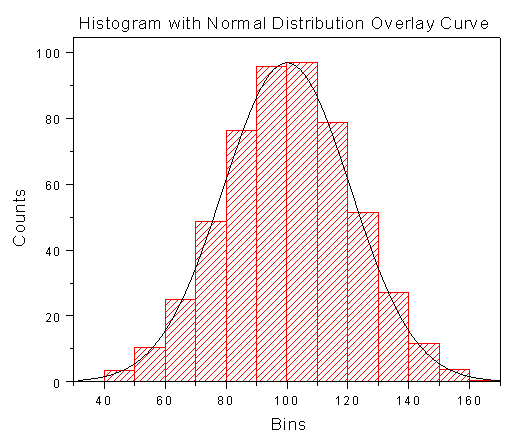
در نواحی حجم بسیار کم یا بسیار زیاد، ممکن است ذرات دیگری هم شمرده شده باشند:
برای بهدستآوردن پراکندگی واقعی گلبولهای قرمز، دو دم منحنی را حذف میکنند.
برای بهدستآوردن پراکندگی واقعی، خطی در فراوانی ۲۰ درصد رسم میشود که هیستوگرام را در دو نقطه قطع کند. اگر این خط منحنی را در ۶۰ و ۱۴۰ قطع کند، دامنه واقعی پراکندگی از ۶۰ تا ۱۴۰ است و ۱۴۰ منهای ۶۰ برابر ۸۰ میشود. بنابراین دامنه پراکندگی برابر با ۸۰ خواهد بود. این دامنه پراکندگی RDW-SD نام دارد. RDW مخفف red cell distribution width است و دامنه پراکندگی حجم گلبولهای قرمز را نشان میدهد. SD مخفف standard deviation یا انحراف معیار است.
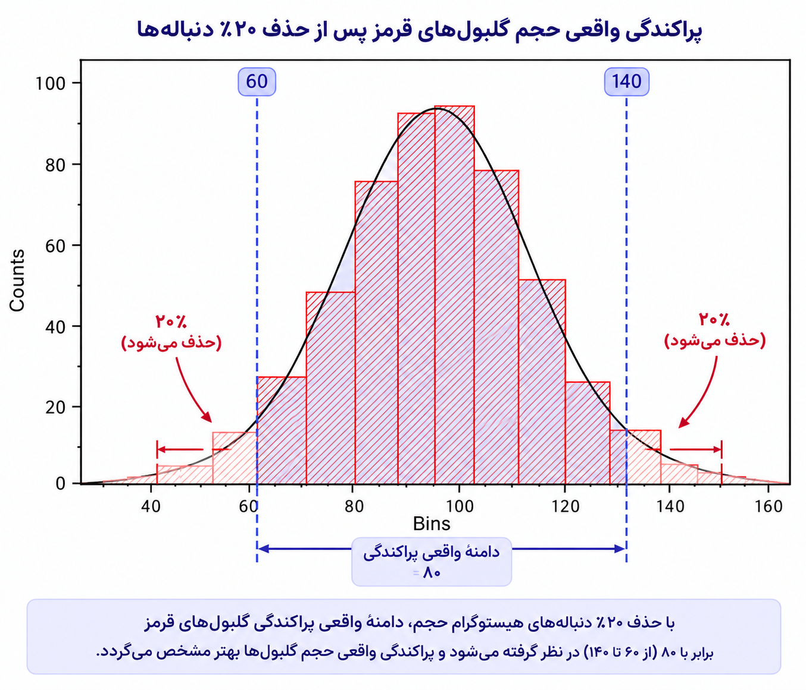
مقدار طبیعی RDW-SD حدود ۳۸ تا ۴۸ فمتولیتر است. افزایش آن یعنی پراکندگی بیشتر که در morphology به این ناهمگونی اندازه، anisocytosis میگویند. یعنی گلبولهای قرمز بیمار یکدست نبوده و حجم های متغیری دارد. برای اینکه گلبولهای قرمز یکدست باشند، RDW-SD باید در محدوده ۳۸ تا ۴۸ قرار بگیرد.
نوع دیگر RDW، یعنی RDW-CV نیز وجود دارد. CV مخفف coefficient of variation یعنی ضریب تغییرات است و تغییرات حجم را نسبت به مقدار نماینده بیان میکند. مقدار طبیعی آن ۱۱٫۵ تا ۱۴٫۵ درصد است.
برای نمونه، اگر میانگین نمره ۱۰ باشد و نمرهها حدود ۵۰ درصد در دو طرف آن پراکندگی داشته باشند، نمرهها میتوانند حدود ۵ و ۱۵ باشند. این مثال نشان میدهد CV درصد پراکندگی را نسبت به مقدار نماینده بیان میکند.
RDW-SD به مقدار نماینده وابسته نیست و دامنه پراکندگی بین کوچکترین گلبول و بزرگترین گلبول را در ۸۰ درصد فراوانی نشان میدهد( چون ۲۰ درصد از دم ها را حذف کردیم).
برای مثال، اگر MCV برابر ۹۰ و RDW-CV برابر ۲۰ درصد باشد، ۲۰ درصدِ ۹۰ برابر ۱۸ است؛ بنابراین بیشتر گلبولها تقریباً بین ۷۲ تا ۱۰۸ قرار میگیرند. تفاوت این دو شاخص آن است که RDW-SD اختلاف بین گلبول کوچک و بزرگ را بهشکل دامنه نشان میدهد، اما RDW-CV تغییرات را نسبت به گلبول نماینده بیان میکند.
در مثال دیگری، RDW-SD برابر ۵۲ و RDW-CV برابر ۱۷ است؛ هر دو بالاتر از محدوده موردنظرند و نشان میدهند گلبولها تا حدی تفاوت اندازه دارند.
نکته: اگر واحد RDW بیان نشود، منظور همان RDW-CV است.
برای نوشتن morphology گلبول قرمز، MCV و RDW را با هم در نظر میگیریم:
پارامتر HDW، یعنی hemoglobin distribution width، دامنه پراکندگی رنگ گلبولهای قرمز را نشان میدهد. هموگلوبین است که به گلبول قرمز رنگ میدهد. HDW میسنجد که آیا همه گلبولهای قرمز مقدار هموگلوبین یکسان دارند یا مقدار آن متفاوت است.
مقدار طبیعی HDW حدود ۲ تا ۳٫۲ درصد است. اگر HDW طبیعی باشد، مقدار هموگلوبین همه گلبولها تقریباً یکسان است و افزایش آن نشان میدهد مقدار هموگلوبین گلبولها متفاوت است.
حجم گلبول قرمز نماینده را MCV مینامیم. اگر هموگلوبین درون گلبول نماینده را وزن کنیم، مقدار بهدستآمده MCH است. MCH مخفف mean cell hemoglobin است و واحد آن پیکوگرم است. هر پیکوگرم برابر ۱۰ به توان منفی ۱۲ گرم است.
گلبول قرمز طبیعی باید ۲۷ تا ۳۲ پیکوگرم هموگلوبین داشته باشد. اگر MCH برابر ۲۰ باشد، بهجای حداقل ۲۷ پیکوگرم، ۲۰ پیکوگرم هموگلوبین دارد. برای این حالت میتوان اصطلاح hypochromic را به کار برد؛ یعنی گلبول قرمز بهعلت MCH پایین کمرنگ است.
MCH پایین ممکن است به فقر آهن مربوط باشد. چای tannin دارد و اگر بعد از غذا نوشیده شود، جذب آهن را مختل میکند.
برای درک بهتر:
۱. ناقل تالاسمی
در تالاسمی مینور، مشکل اصلی کاهش تولید یک زنجیرهٔ گلوبین بهصورت ژنتیکی و نسبتاً ثابت است. بنابراین مغز استخوان از ابتدا تعداد زیادی RBC کوچک تولید میکند؛ در نتیجه: گلبولهای قرمز کوچکاند، ولی اندازهشان نسبتاً شبیه هم است. در نتیجه پراکندگی اندازه کم و RDW معمولا طبیعی یا کمی بالاست. یعنی یک جمعیت نسبتاً یکدست از RBCهای میکروسیتیک داریم.
۲. فقر آهن
اینجا داستان تدریجیتر است. وقتی آهن کم میشود، RBCهایی که در ابتدا ساخته شدهاند ممکن است تقریباً طبیعی باشند؛ با شدیدتر شدن کمبود آهن، RBCهای جدید کوچکتر و کمرنگتر میشوند. پس در خون همزمان میتوانیم گلبولهای قدیمیتر با اندازه نسبتاً بزرگتر و گلبولهای جدیدتر با اندازه کوچکتر داشته باشیم. درنتیجه اندازهها پراکندهتر میشوند، RDW بالا میرود و Anisocytosis بیشتر دیده میشود.
بنابراین میکروسیتیک + هایپوکرومیک بهتنهایی نمیگوید تالاسمی است یا فقر آهن؛ میزان تفاوت اندازهها (RDW) یک سرنخ مهم است.
برای درک بهتر: ویتامین B12 و فولات برای ساخت DNA لازماند. در کمبود B12 یا فولات، ساخت DNA در سلولهای پیشساز RBC در مغز استخوان مختل میشود. نتیجه؟ هسته نمیتواند درست و بهموقع تقسیم شود، ولی رشد سیتوپلاسم ادامه پیدا میکند. پس تعداد تقسیمها کمتر و سلول نهایی بزرگتر میشود؛ بنابراین RBCها ماکروسیتیک میشوند. در مغز استخوان هم پیشسازهای بسیار بزرگ ایجاد میشوند که به آنها مگالوبلاست میگوییم؛ به همین دلیل میگوییم: Megaloblastic anemia. اما چرا Anisocytosis؟ چون اختلال تولید RBC شدید است و سلولها از نظر اندازه طبیعی و یکدست نیستند. یعنی در خون RBCهای با اندازههای متفاوت (Anisocytosis) مشاهده میشوند و RDW بالا میرود.
MCHC مخفف mean cell hemoglobin concentration است و غلظت هموگلوبین گلبول قرمز نماینده را نشان میدهد. برای محاسبه آن، وزن هموگلوبین(MCH) را بر حجم(MCV) تقسیم و در ۱۰۰ ضرب میکنیم.
برای مثال، اگر MCV برابر ۸۰ و MCH برابر ۲۸ باشد، نسبت وزن به حجم در ۱۰۰ برابر با ۳۵ درصد خواهد بود.
مقدار طبیعی MCHC حدود ۳۲ تا ۳۶ درصد است.
MCH مقدار هموگلوبین در یک گلبول است و نسبت وزن به حجم را نشان نمیدهد؛ MCHC نسبت وزن به حجم را بیان میکند.
در جمعبندی، MCV حجم گلبول نماینده، RDW دامنه پراکندگی، MCH وزن هموگلوبین گلبول نماینده و MCHC غلظت هموگلوبین آن را نشان میدهند.
اساس کار دستگاههای مجهز را میتوان با دستگاه ذرهشمار توضیح داد. برای این منظور، ظرف و استوانه شیشهای سوراخداری را تصور کنید؛ سوراخ را aperture یا روزنه میگویند. ارتباط از طریق روزنه برقرار میشود و در دو طرف آن الکترود قرار دارد که جریان برق برقرار میکند.
برای شمارش، خون رقیق میشود. برای شمارش گلبول سفید، مادهای به نام lysing agent به خون اضافه میکنند تا گلبولهای قرمز را از بین ببرد و گلبولهای سفید باقی بمانند. دستگاه vacuum مایع را میکشد و وارد روزنه میکند.
هر گلبولی که از روزنه عبور میکند، جریان برق را تغییر میدهد. با کمشدن جریان، مقاومت افزایش پیدا میکند. دستگاه میزان تغییر جریان را حس میکند و آن را به اندازه ذره ارتباط میدهد؛ بنابراین هنگام شمارش، اندازه ذره را هم برآورد میکند. این روش تکنولوژی impedance یا aperture impedance، یعنی تکنولوژی روزنهای نام دارد.
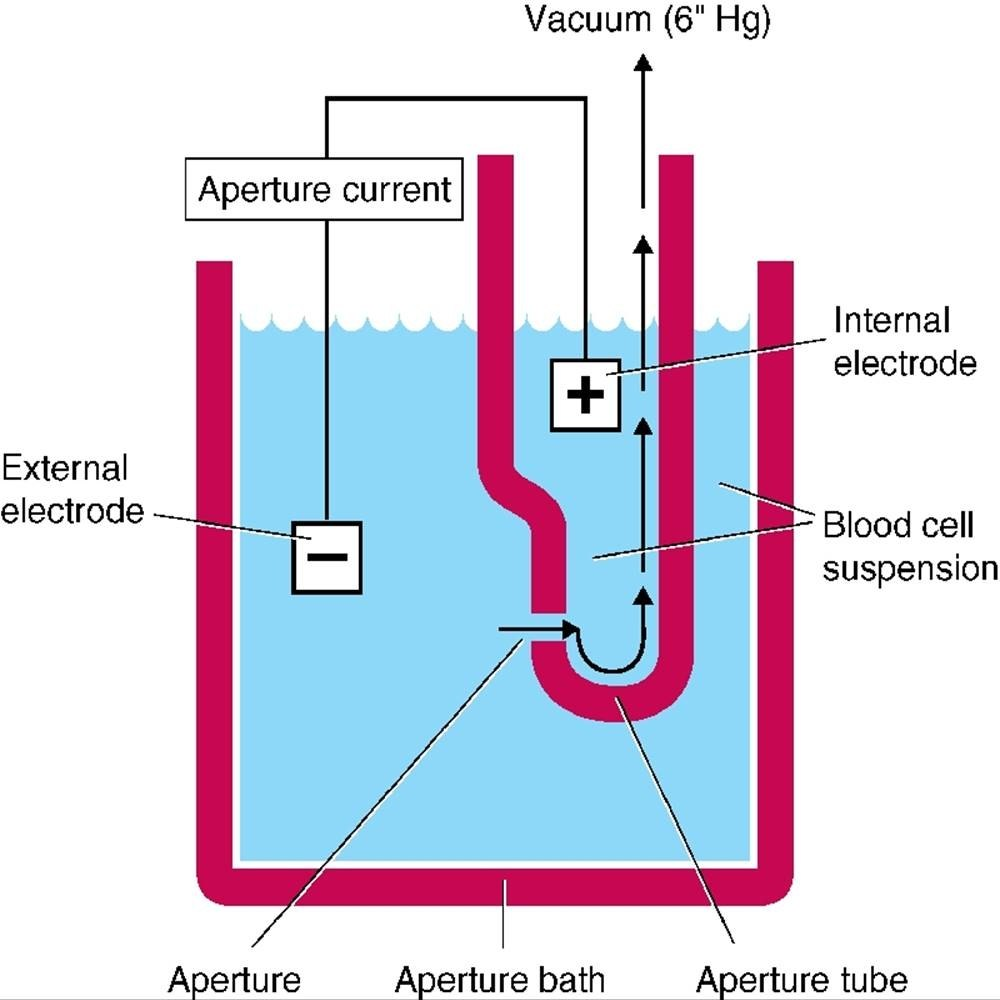
هنگام شمارش گلبول قرمز، lysing agent اضافه نمیشود، چون باید گلبول قرمز باقی بماند. در کانالی که گلبولهای قرمز شمرده میشوند، پلاکتها هم شمارش میشوند. پلاکت کوچکترین سلول خونی است و مونوسیت از سلولهای بزرگتر است. عبور پلاکت از روزنه تغییر کمی در جریان ایجاد میکند و دستگاه آن را پلاکت تشخیص میدهد؛ عبور نوتروفیل یا مونوسیت تغییر بیشتری در جریان ایجاد میکند. دستگاه ذرات را بر اساس تغییر جریان دستهبندی میکند.
راه دیگری برای اندازهگیری حجم و آنالیز گلبولها light scattering، یعنی پراکنش یا پخش نور است. سلولها تکتک و پشتسرهم از لوله quartz عبور میکنند و analyzer به آنها نور لیزر میتاباند. نور هنگام برخورد با سلول پخش میشود و میزان پخش نور در زاویه روبهرو با حجم گلبول ارتباط دارد. این روش light scattering نام دارد.
دستگاه هنگام شمارش گلبول قرمز histogram رسم میکند؛ این منحنی توزیع حجم گلبولها را نشان میدهد. اگر منحنی را به دو قسمت مساوی تقسیم کنیم و خط میانه را رسم کنیم، تقاطع خط میانه با محور X مقدار MCV را نشان میدهد؛ دستگاه به این ترتیب MCV را از histogram به دست میآورد. RDW نیز به روشی که توضیح داده شد محاسبه میشود.
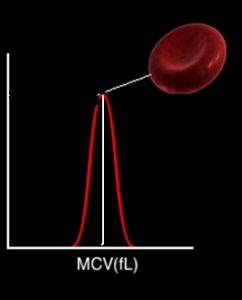
با centrifuge کردن خون، گلبولهای قرمز بهعلت سنگینبودن پایین میآیند و plasma بالا میرود. میان plasma و گلبولهای قرمز، لایهای به نام buffy coat قرار میگیرد که شامل گلبولهای سفید و پلاکتهاست. بنابراین، پس از سانتریفیوژ سه لایه تشکیل میشود:
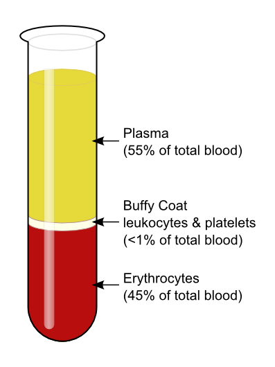
حجم گلبولهای قرمز متراکمشده نسبت به حجم خون سانتریفیوژشده hematocrit نام دارد. نام دیگر آن PCV، یعنی packed cell volume یا حجم فشرده گلبولهای قرمز، است.
در نمونه موردبحث، حدود ۴۵ درصد حجم کل خون سانتریفیوژشده را گلبول قرمز متراکم و حدود ۵۵ درصد را plasma تشکیل میدهد. در آزمایشگاه، خون را حدود ۵ دقیقه با ۱۰٬۰۰۰ دور در دقیقه سانتریفیوژ میکنند و درصد حجمی hematocrit را با خطکش مخصوص میخوانند.
در فرد سالم، hematocrit معمولاً سه برابر hemoglobin است. اگر hematocrit یک خانم ۳۶ تا ۴۸ درصد باشد، hemoglobin حدود ۱۲ تا ۱۶ است؛ به همین دلیل، hemoglobin خانمها معمولاً ۱۲ تا ۱۶ در نظر گرفته میشود. آزمایشگاه ممکن است hematocrit یا خود hemoglobin را اندازه بگیرد.
اگر مقدار هماتوکریت یعنی حجم فشرده گلبولهای قرمز را بر تعداد گلبولهای قرمز در همان حجم تقسیم کنیم، حجم یک گلبول قرمز، یعنی MCV به دست میآید.
اگر دستگاهی برای محاسبه گراف نداشته باشیم، میتوان از فرمول زیر استفاده کرد:
MCV = hematocrit × 10 ÷ RBC count
واحد hemoglobin گرم بر دسیلیتر است. برای مثال، hemoglobin برابر ۱۵ یعنی ۱۵ گرم در ۱۰۰ سیسی خون. مقدار طبیعی آن حدود ۱۴ تا ۱۶ در نظر گرفته شده است. حداکثر هموگلوبین در آقایان ۱۶.۵ است که قبلا تا ۱۸ در نظر گرفته میشد. برای مثال اگر در ۱۰۰ سیسی خون ۱۱ گرم hemoglobin وجود داشته باشد، فرد کمخون است.
MCH را میتوان با تقسیم hemoglobin بر شمارش RBC و درنظرگرفتن ضریب ۱۰ محاسبه کرد:
MCH = hemoglobin × 10 ÷ RBC count
برای مثال، اگر hemoglobin برابر ۱۱٫۵ و RBC برابر ۳٫۹۷ باشد، MCH حدود ۲۸٫۹۶ یعنی تقریباً ۲۹ میشود. این مقدار را میتوان با عدد دستگاه مقایسه کرد.
MCHC برابر وزن تقسیم بر حجم، یعنی MCH تقسیم بر MCV و ضربدر ۱۰۰ است. همچنین از hemoglobin و hematocrit محاسبه میشود:
MCHC = hemoglobin × 100 ÷ hematocrit
در مثالی که hemoglobin برابر ۱۱٫۵ و hematocrit برابر ۳۲٫۱۴ است، MCHC حدود ۳۵٫۴ میشود. بنابراین، حتی بدون رسم گراف میتوان شاخصها را با فرمول محاسبه کرد.
در لام رنگشدهای که در آزمایشگاه بررسی میشود، morphology نمونهها باید توسط پرسنل دیده و گزارش شود.
گلبول قرمز طبیعی normocytic, normochromic است؛ یعنی اندازه و رنگ آن طبیعی است و هاله مرکزی دارد.
اگر هم تغییر اندازه و هم تغییر شکل گلبولهای قرمز وجود داشته باشد، اصطلاح anisopoikilocytosis به کار میرود:
بنابراین، اگر بیمار هر دو نوع تغییر را داشته باشد، morphology را anisopoikilocytosis توصیف میکنیم.
گلبولهای قرمز درون مغز استخوان هستهدارند، اما وقتی وارد خون میشوند نباید هسته داشته باشند. گلبول قرمز نباید بهجز هموگلوبین، چیز دیگری درونش داشته باشد.
گاهی گلبول قرمز وارد خون میشود اما جسم غیرطبیعی داخل آن دیده میشود که به آن RBC inclusion میگویند. یکی از این موارد میتواند انگل باشد، اما در این بحث انگل کنار گذاشته میشود.
ممکن است هنگام خارجشدن هسته، تکهای از آن داخل گلبول قرمز باقی بماند؛ به این تکه Howell-Jolly body میگویند. Howell-Jolly body بقایای هسته یا کروموزوم جا افتاده است که بهشکل نقطه یا خال بنفش داخل گلبول قرمز دیده میشود.
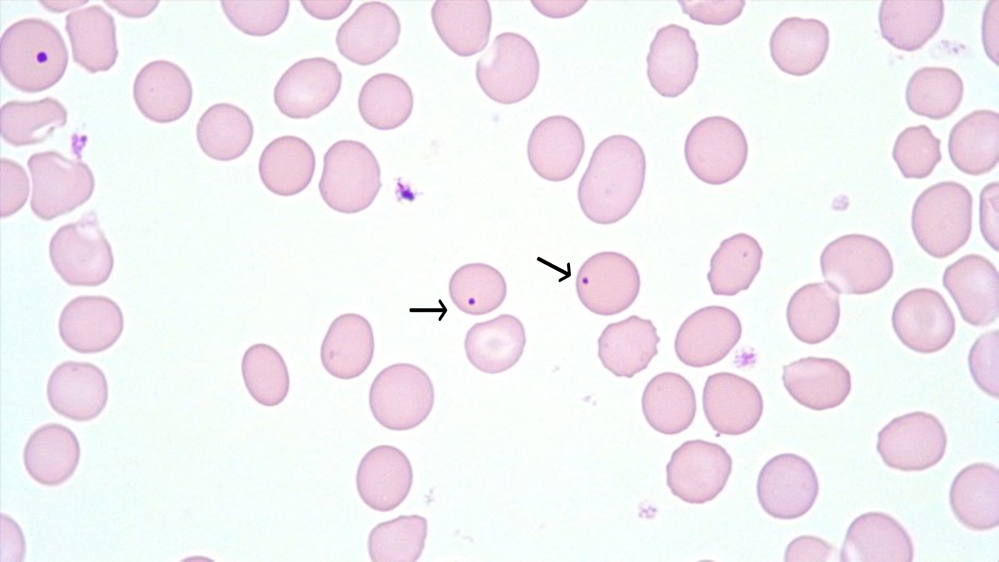
در حالت طبیعی نباید Howell-Jolly body دیده شود، چون طحال آن را از بین میبرد. گلبول قرمز باید از طحال عبور کند و تأیید شود تا اجازه ورود به خون داشته باشد. بنابراین اگر طحال سالم باشد، Howell-Jolly body دیده نمیشود.
دیدن Howell-Jolly body در بیمار ممکن است به این معنا باشد که طحال برداشته شده یا طحال بزرگ شده است. طحال در سمت چپ، زیر آخرین دنده قرار دارد. کبد در سمت راست، زیر آخرین دنده است و کیسه صفرا زیر کبد قرار دارد.
حلقه Cabot میتواند گرد، شبیه عدد ۸ انگلیسی یا شبیه رشتهای مویی و پیچیده باشد. این حلقهها بقایای رشتههای دوک هستند و Cabot rings نام دارند؛ در حالت طبیعی نباید دیده شوند.
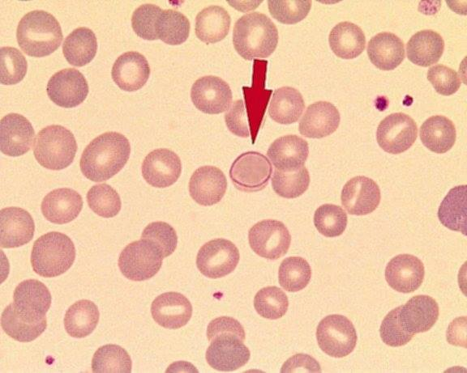
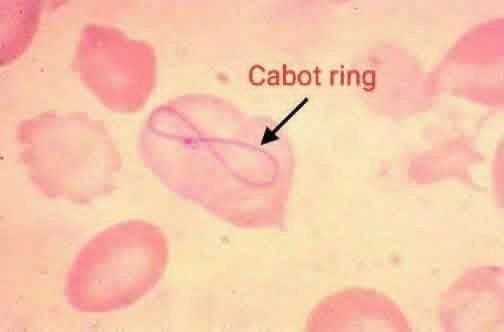
گلبول قرمز ممکن است بقایای ribosome و RNA داشته باشد که نباید در آن باقی بمانند. اگر ribosome وجود داشته باشد، بهشکل نقاط آبی دیده میشود. آبیرنگشدن در رنگآمیزی basophilic نام دارد و این نقاط را basophilic stippling میگویند. stippling به معنای نقطهنقطهشدن است.
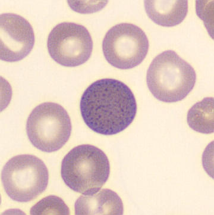
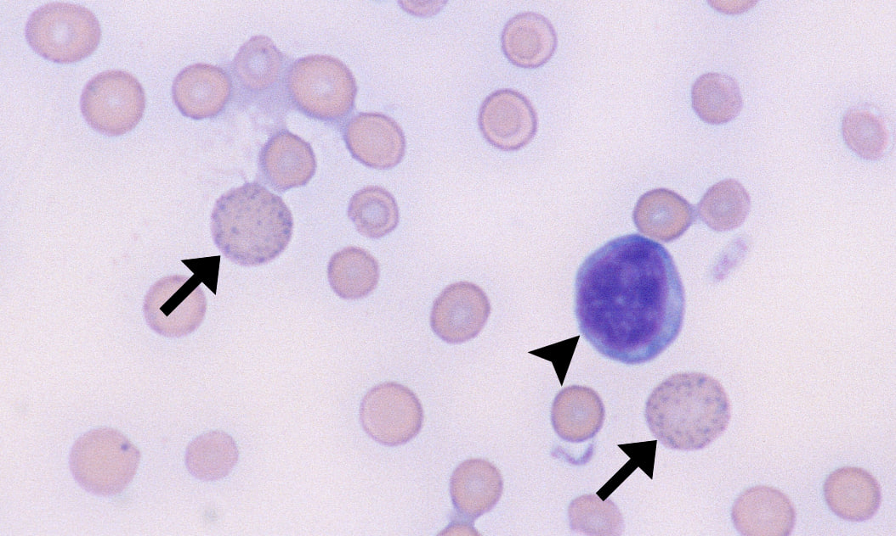
یکی از موارد مهمی که basophilic stippling در آن دیده میشود، مسمومیت با سرب است.
Pappenheimer bodies بهشکل چند گرانول بنفش نزدیک به هم، مثلاً ۵ یا ۶ گرانول، در یک گوشه گلبول دیده میشوند. این اجسام شامل آهن و میتوکندریهای دژنرهشده هستند. ورود بار اضافی آهن به گلبول یا نقص آنزیمی در متابولیسم آهن میتواند باعث ایجاد این inclusionها شود. گلبول قرمز باید فاقد آهن باشد. آهن میبایست با ورود به میتوکندری تبدیل به هم شود. گلبولی که میتوکندری های خراب و دژنره شده داشته باشد، ترکیب آهن و میتوکندری را همراه خود دارد که اجسام پاپنهایمر نامیده میشوند.
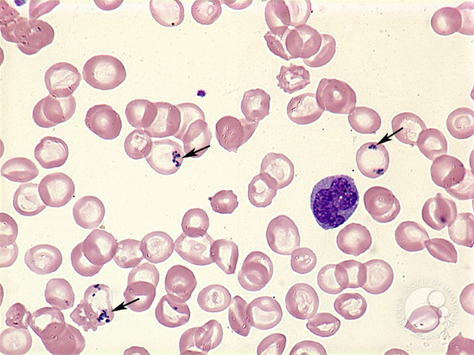
در مسیر تشکیل heme آنزیمهای زیادی لازماند؛ از جمله succinyl-CoA و glycine و آنزیمهای مختلفی که در مسیر ساخت فعالیت میکنند تا آهن وارد حلقه protoporphyrin شود. نقص هر یک از این آنزیمها میتواند مانع ورود درست آهن به مسیر شود.
یک inclusion دیگر Heinz body است. هموگلوبین میتواند غیرطبیعی باشد، مانند هموگلوبین H. اجسام هاینز، رسوب هموگلوبین denature شده است. مثلا ممکن است بیمار باقاله ای بوده و ماده ی اکسیدانتی مصرف کرده باشد که هموگلوبین را denature کرده است.
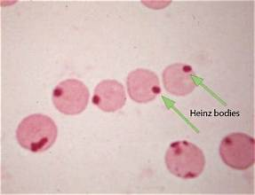
از inclusionهای گلبول قرمز میتوان موارد زیر را نام برد:
لکچرها در سایت دانشکده، زیر عنوان کلاسهای مجازی، بهشکل سمعیـبصری قابل مشاهده و دانلود هستند. لکچرهای Hematopoiesis، morphology گلبولهای قرمز و هماتولوژی ۱، ۲ و ۳ در سایت قرار دارند. همچنین بخش «تغییرات morphology گلبولهای قرمز» و لکچرهای اندکسهای خون بهشکل صوتی و تصویری موجود است.
| ویژگی | مقدار یا توضیح |
|---|---|
| عمر گلبول قرمز | حدود ۱۲۰ روز |
| مسافت طیشده در طول عمر | حدود ۴۸۰ کیلومتر |
| جذب روزانه آهن از غذا | حدود ۱ تا ۲ میلیگرم |
| نیاز روزانه سیستم خونساز برای تولید گلبول قرمز | ۲۵ میلیگرم |
| منبع عمده آهن موردنیاز | گلبولهای فرسوده؛ آهن آنها توسط طهال به مغز استخوان بازمیگردد |
| لوله یا ضدانعقاد | کاربرد و ویژگی |
|---|---|
| سر بنفش کمرنگ؛ K2 EDTA | CBC؛ جلوگیری از لختهشدن نمونه. غلظت توصیهشده ۱٫۵ میلیگرم بهازای هر سیسی خون است. |
| K3 EDTA | محلولترین نمک و سریعالحل در خون است، اما تا حدی گلبولها را چروکیده میکند؛ ICSH آن را توصیه نمیکند. |
| Na2 EDTA | قابلاستفاده است، اما K2 EDTA ترجیح دارد. |
| سر مشکی؛ sodium citrate | آزمایش ESR |
| سر light blue؛ sodium citrate | آزمایشهای انعقادی |
| گروه | موارد |
|---|---|
| اندکسهای گلبول قرمز | hemoglobin، شمارش RBC، hematocrit، MCV، MCH، MCHC، RDW-SD، RDW-CV |
| اندکسهای پلاکتی | Platelet count، PDW، MPV، P-LCR |
| سایر موارد ذکرشده در CBC | WBC، ESR، neutrophil، lymphocyte، monocyte، eosinophil، basophil، reticulocyte |
| MCV در فرد طبیعی | توصیف گلبول قرمز |
|---|---|
| کمتر از ۸۰ فمتولیتر | microcytic |
| ۸۰ تا ۹۴ فمتولیتر | normocytic |
| بیشتر از ۹۴ فمتولیتر | macrocytic |
| گروه سنی یا وضعیت | MCV یا معیار ذکرشده |
|---|---|
| هنگام تولد | حدود ۱۰۴ تا ۱۲۰ فمتولیتر؛ macrocytosis فیزیولوژیک |
| نوزاد هنگام تولد با MCV کمتر از ۹۴ | microcytosis بدو تولد؛ سندرمهای آلفا تالاسمی هم ممکن است مطرح باشند |
| کودک زیر ۱۰ سال | حداقل قابلقبول را بسیاری از پزشکان اطفال ۷۰ بهاضافه سن در نظر میگیرند |
| بعد از ۱۰سالگی | MCV در محدوده ۸۰ تا ۹۴ ثابت میشود |
| نوزاد یا کودک سالم | MCV نباید به کمتر از ۷۰ برسد |
| MCV | RDW | توصیف morphology | ارتباطی که در درس ذکر شده است |
|---|---|---|---|
| ۶۰ | ۱۲ | microcytic و یکدست | ممکن است در ناقل ژن تالاسمی دیده شود |
| ۷۲ | ۲۱ | microcytic و anisocytosis | گلبولها کوچکاند و پراکندگی اندازه افزایش یافته است |
| ۱۱۱ | ۲۵ | macrocytic و anisocytosis | ممکن است با کمبود ویتامین B12 یا اسید فولیک و کمخونی megaloblastic همراه باشد |
| شاخص | معنای شاخص در درس |
|---|---|
| MCV | حجم گلبول نماینده |
| RDW | دامنه یا پراکندگی اندازه گلبولها |
| MCH | وزن هموگلوبین گلبول نماینده |
| MCHC | غلظت هموگلوبین گلبول نماینده |
| PCV | نسبت حجم RBCهای متراکم شده به حجم کل خون |
| شاخص | فرمول یا رابطه ارائهشده |
|---|---|
| MCV | hematocrit × 10 ÷ RBC count |
| MCH | hemoglobin × 10 ÷ RBC count |
| MCHC | MCH ÷ MCV × 100؛ همچنین hemoglobin × 100 ÷ hematocrit |
| اصطلاح | معنای آن |
|---|---|
| normocytic, normochromic | اندازه و رنگ گلبول قرمز طبیعی است و هاله مرکزی دارد |
| Anisocytosis | تغییرات اندازه |
| Poikilocytosis | تغییرات شکل |
| Anisopoikilocytosis | وجود همزمان تغییرات اندازه و شکل |
| Inclusion یا یافته | ظاهر یا ماهیت ذکرشده | نکته همراه |
|---|---|---|
| Howell-Jolly body | بقایای هسته؛ نقطه یا خال بنفش | در حالت طبیعی با طحال از بین میرود؛ دیدهشدن آن ممکن است به برداشتهشدن یا بزرگشدن طحال مربوط باشد |
| Cabot rings | گرد، شبیه عدد ۸ انگلیسی یا رشتهای مویی و پیچیده | بقایای رشتههای دوک؛ در حالت طبیعی نباید دیده شوند |
| basophilic stippling | نقاط آبی ناشی از بقایای ribosome و RNA | در مسمومیت با سرب دیده میشود |
| Pappenheimer bodies | چند گرانول بنفش نزدیک به هم، مثلاً ۵ یا ۶ گرانول | شامل آهن و میتوکندریهای دژنرهشده |
| Heinz body | رسوب هموگلوبین denatureشده | ممکن است ماده اکسیدانتی، مانند بعضی داروها، در denature شدن هموگلوبین نقش داشته باشد |
ویژگیهای تولید، عمر و بازیافت آهن گلبول قرمز را شرح دهید.
در هر ثانیه حدود ۳ میلیون گلبول قرمز از سلولهای مادر در مغز استخوان وارد خون میشوند و تقریباً به همین تعداد از بین میروند. عمر گلبول قرمز حدود ۱۲۰ روز است. با ظاهرشدن آنتیژن پیری، طحال آن را از بین میبرد و آهنش را برای استفاده دوباره در تولید گلبولهای قرمز به مغز استخوان میفرستد. با آنکه روزانه حدود ۱ تا ۲ میلیگرم آهن از غذا جذب میشود، سیستم خونساز برای تولید گلبول قرمز روزانه به ۲۵ میلیگرم آهن نیاز دارد و عمده آن از گلبولهای فرسوده تأمین میشود.
تفاوت RDW-SD و RDW-CV را شرح دهید و محدودههای طبیعی ذکرشده را بیان کنید.
RDW-SD دامنه پراکندگی بین گلبول کوچک و بزرگ را پس از حذف دو دم histogram و در سطح فراوانی ۲۰ درصد نشان میدهد و به مقدار نماینده وابسته نیست؛ مقدار طبیعی آن حدود ۳۸ تا ۴۸ فمتولیتر است. RDW-CV تغییرات را نسبت به مقدار نماینده بیان میکند؛ مقدار طبیعی آن ۱۱٫۵ تا ۱۴٫۵ درصد است.
چگونه از MCV و RDW برای توصیف سه حالت morphology گلبول قرمز استفاده میشود؟
MCV پایین همراه با RDW طبیعی، مانند MCV برابر ۶۰ و RDW برابر ۱۲، به گلبولهای microcytic و یکدست اشاره دارد. MCV برابر ۷۲ و RDW برابر ۲۱ نشاندهنده گلبولهای microcytic با anisocytosis است. MCV برابر ۱۱۱ و RDW برابر ۲۵ نشاندهنده گلبولهای macrocytic با anisocytosis است.
تفاوت MCH و MCHC چیست و مقدار طبیعی یا حدودی هرکدام که در درس ذکر شده است چیست؟
MCH مقدار هموگلوبین در یک گلبول قرمز نماینده است و واحد آن پیکوگرم است؛ مقدار طبیعی گلبول قرمز ۲۷ تا ۳۲ پیکوگرم است و MCH کمتر از ۲۷ hypochromic گفته میشود. MCHC غلظت هموگلوبین را نشان میدهد و نسبت وزن به حجم را بیان میکند؛ مقدار طبیعی آن حدود ۳۲ تا ۳۶ است.
Howell-Jolly body، basophilic stippling و Pappenheimer bodies را از نظر ظاهر یا محتوای ذکرشده مقایسه کنید.
Howell-Jolly body بقایای هسته است و بهشکل نقطه یا خال بنفش دیده میشود؛ در حالت طبیعی طحال آن را از بین میبرد. basophilic stippling نقاط آبی ناشی از بقایای ribosome و RNA است و یکی از مواردی که در آن دیده میشود مسمومیت با سرب است. Pappenheimer bodies چند گرانول بنفش نزدیک به هم هستند و شامل آهن و میتوکندریهای دژنرهشدهاند.
کدام گزینه درباره گلبول قرمز درست است؟
عمر گلبول قرمز حدود ۱۲۰ روز است و هسته، میتوکندری و ریبوزوم ندارد.
برای نمونه CBC در لولهای با چه رنگی از سر لوله و کدام ضدانعقاد استفاده میشود؟
برای CBC از لوله سر بنفش کمرنگ با K2 EDTA استفاده میشود.
کدام گزینه محدوده و توصیف MCV را درست بیان میکند؟
MCV کمتر از ۸۰ microcytic، بین ۸۰ تا ۹۴ normocytic و بیشتر از ۹۴ macrocytic است.
کدام عبارت تفاوت RDW-SD و RDW-CV را درست بیان میکند؟
RDW-SD دامنه پراکندگی و RDW-CV تغییرات نسبت به مقدار نماینده را بیان میکند.
MCH کمتر از ۲۷ پیکوگرم در درس با کدام توصیف همراه است؟
MCH کمتر از ۲۷ پیکوگرم را hypochromic میگویند.
کدام گزینه تعریف MCHC را درست بیان میکند؟
MCHC غلظت هموگلوبین را نشان میدهد و نسبت وزن به حجم را بیان میکند.
کدام روش با عبور سلول از aperture و تغییر جریان برق کار میکند؟
در روش aperture impedance، عبور هر گلبول از روزنه جریان برق را تغییر میدهد و دستگاه از این تغییر برای برآورد اندازه ذره استفاده میکند.
در خون سانتریفیوژشده، buffy coat در کدام موقعیت قرار دارد و شامل چه چیزهایی است؟
buffy coat میان plasma و گلبولهای قرمز قرار میگیرد و شامل گلبولهای سفید و پلاکتهاست.
کدام inclusion بقایای هسته است و بهشکل نقطه یا خال بنفش دیده میشود؟
Howell-Jolly body بقایای هسته است که بهشکل نقطه یا خال بنفش دیده میشود.
کدام تطبیق درباره RBC inclusions درست است؟
Heinz body رسوب هموگلوبین denatureشده است.
ادیتور: ویرایش آکادمیک خودکار (Layer 5)
منابع استفادهشده:
برآورد تقریبی تکمیل محتوا: حدود ۹۵٪